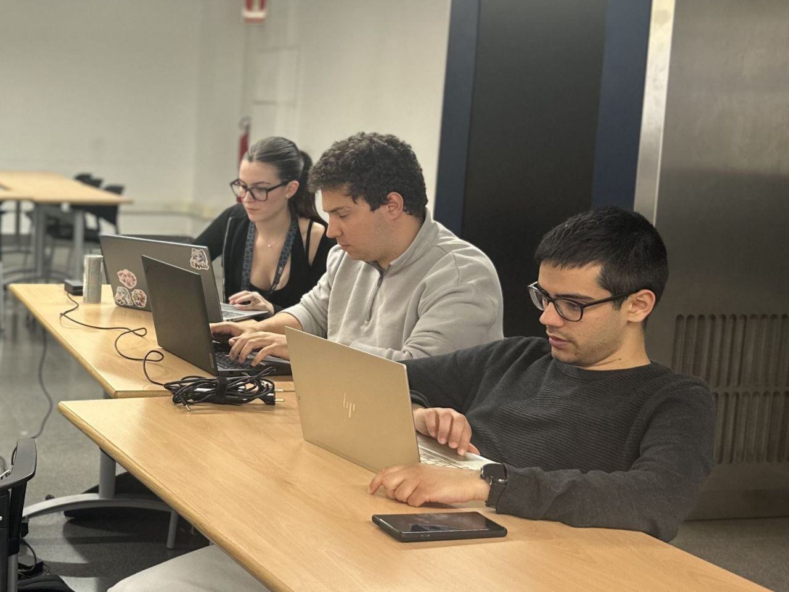

Mi perfil
Me interesa comprender cómo funcionan los sistemas, identificar vulnerabilidades y aprender a proteger infraestructuras y aplicaciones.
PORTFOLIO DE CIBERSEGURIDAD
Ingeniera informática especializada en ciberseguridad interesada en pentesting, análisis forense, redes y seguridad ofensiva.
Actualmente estoy desarrollando mis conocimientos en seguridad informática mediante laboratorios, proyectos personales y retos CTF.
Me interesa comprender cómo funcionan los sistemas, identificar vulnerabilidades y aprender a proteger infraestructuras y aplicaciones.
Seguir creciendo en pentesting, análisis de redes, respuesta ante incidentes y automatización de tareas de seguridad.
inLab FIB · Contrato de prácticas
Barcelona, Cataluña, España · Híbrido
Análisis de seguridad, investigación de vulnerabilidades y tareas de ciberseguridad en el laboratorio de innovación de la Facultat d'Informàtica de Barcelona.
FIB Visiona
Barcelona, Cataluña, España
Soporte en campañas de marketing, comunicación y gestión de contenidos para la empresa asociada a la Facultat d'Informàtica de Barcelona.
Vulnerabilidades documentadas en la base de datos CVE.
Cross-Site Scripting (XSS) almacenado en Xibo CMS v4.1.2 de Xibo Signage. El atacante inyecta un payload malicioso en el campo "Text" de "Global Elements" dentro de una plantilla.
Ver repositorio →Cross-Site Scripting (XSS) reflejado en Xibo CMS v4.1.2 de Xibo Signage. El atacante inyecta un payload en el campo "Configuration Name" de un widget dentro de una plantilla.
Ver repositorio →Script para comprobar puertos y recopilar información básica sobre servicios accesibles.
Ver repositorio →Investigación de capturas de red para identificar protocolos, anomalías y mensajes ocultos.
Ver proyecto →Investigación sobre adaptación y fine-tuning de un modelo Qwen para aprendizaje de seguridad informática.
Ver documentación →Grado en Ingeniería Informática, con especialización en ciberseguridad y redes.
Curso de especialización en ciberseguridad aplicada a Smart Cities, con enfoque en protección de infraestructuras críticas y análisis de riesgos.
Curso de especialización en inteligencia artificial aplicada a la logística, con enfoque en aprendizaje automático y análisis de datos.
Cursando un máster en ciberseguridad, con enfoque en seguridad ofensiva, análisis de vulnerabilidades y protección de sistemas.
Programa intensivo de ciberseguridad organizado por la Universidad de Málaga y financiado por Google.org. Temas de criptografía postcuántica, IA y ciberseguridad, fraude y ciberdelincuencia, y desinformación.
Saber más →Charlas divulgativas sobre ciberseguridad y criptografía impartidas en el ámbito universitario.
Charla sobre ciberseguridad y criptografía para más de 100 alumnos de 6º de Primaria en la Facultat d'Informàtica de Barcelona. Incluyó una actividad práctica de cifrado César.
Saber más →Segunda edición de la charla sobre ciberseguridad y criptografía en la Facultat d'Informàtica de Barcelona, continuando con la iniciativa de acercar la seguridad informática al ámbito educativo.
Saber más →Congresos y conferencias de ciberseguridad y tecnología en los que he participado.
Congreso de ciberseguridad referente en España. Edición celebrada en Madrid con charlas sobre seguridad ofensiva, defensiva e investigación.
rootedcon.com →Mobile World Congress, el evento de tecnología móvil más importante del mundo. Participación en las sesiones dedicadas a ciberseguridad y protección de infraestructuras.
mwcbarcelona.com →Evento de ciberseguridad en Barcelona con ponentes como Marcin Detyniecki (IA justa), Nate Gentil (miedo como herramienta), Chema Alonso (IA y hackers) y José Luis Crespo (tecnologías cuánticas).
talentarena.es →Retos realizados exclusivamente en plataformas, máquinas propias y entornos expresamente autorizados.
Reconocimiento, autenticación, control de acceso, inyección y vulnerabilidades de inclusión de archivos.
Análisis de documentos, imágenes, metadatos, capturas de red y archivos sospechosos.
Identificación y resolución de mensajes codificados y cifrados dentro de retos educativos.

Segunda posición junto a Hèctor Godoy Creus y Oriol Vilella Jam en el CTF de INCIBE Emprende by Sherpa Tribe, celebrado en la UPC. Dos días de retos con un especialmente divertido de OSINT.